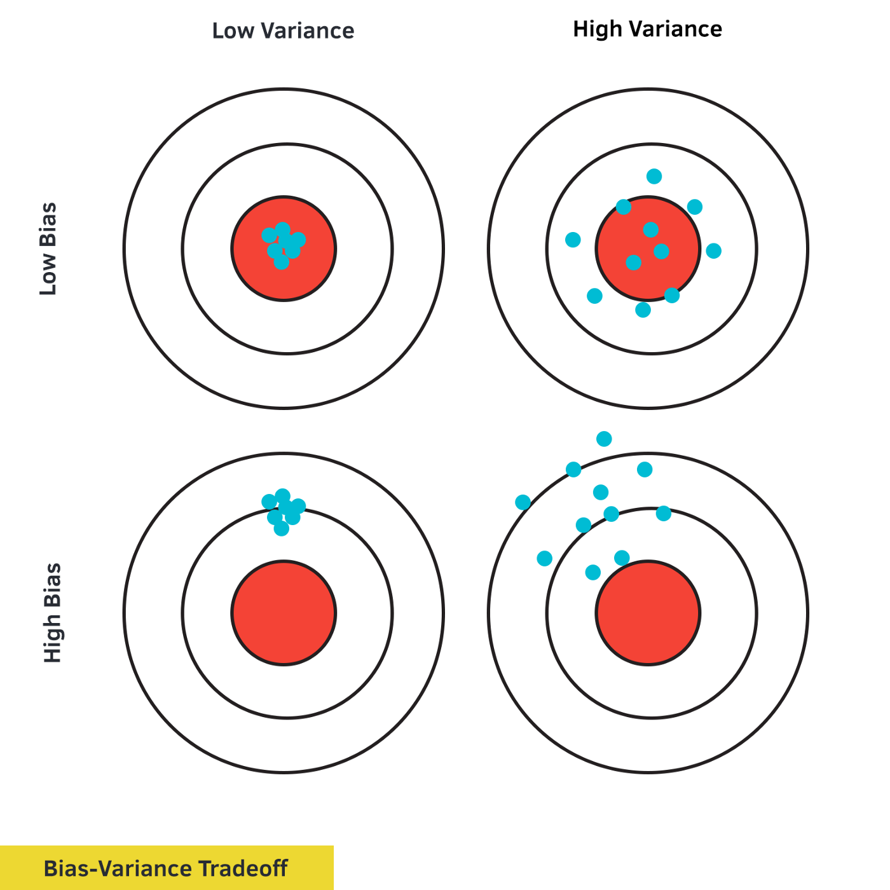

Introduction
Linear regression is one of the most important tools in statistics, useful for both prediction and causal inference across a range of disciplines. At its core, regression is about using observed data to estimate the unknown true relationship between variables. Intuitively, this suggests two key features we might desire in a regression model:
Low Bias: The model predicts the true relationship correctly on average
Low Variance: The predictions do not vary widely
These two features are illustrated nicely in the following figure:

Ideally, a regression model would satisfy both of these conditions, and the estimates would look something like the bulls-eye on the top left. In many cases, however, there is a tradeoff between low bias and low variance.
Ordinary least squares, the most commonly used regression model, does well on the first of these two criteria–under reasonable assumptions, it correctly predicts the true relationship on average. However, in cases with many explanatory variables, it fails the second criteria–even though the estimates are correct on average they may vary wildly depending on the specific sample of data that is used. In such cases, the OLS estimates will look like the bulls-eye on the top right in the figure above.
In this project we consider a modification of Ordinary Least Squares, called regularization, that attempts to overcome this limitation. By penalizing large coefficients, this approach trades off unbiasedness (meaning that the model no longer makes the correct prediction on average) for less variance (meaning that a given estimate may be closer to the true value). Thus, penalized regression estimates may look more like the bulls-eye on the bottom left.
We begin by introducing penalized regression models in section 2 and present derivations of their bias and variance in section 3. Next, we discuss the pros and cons of different types of penalized regression models in section 4. Then, in section 5, we illustrate the properties derived in section 3 on simulated data, showing how penalized regression estimates differ from OLS and how different types of regularization models differ from each other. Finally, in section 5, we briefly discuss interesting real world applications of penalized regression.